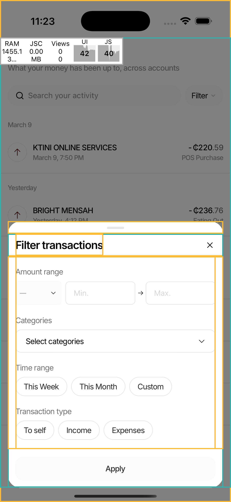
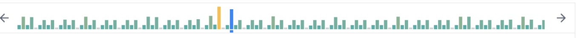
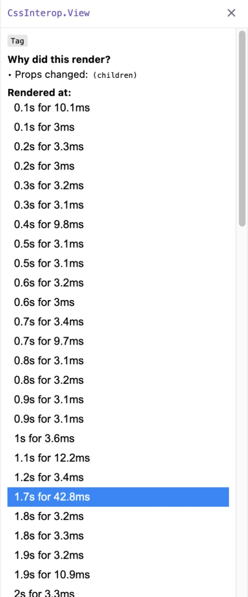
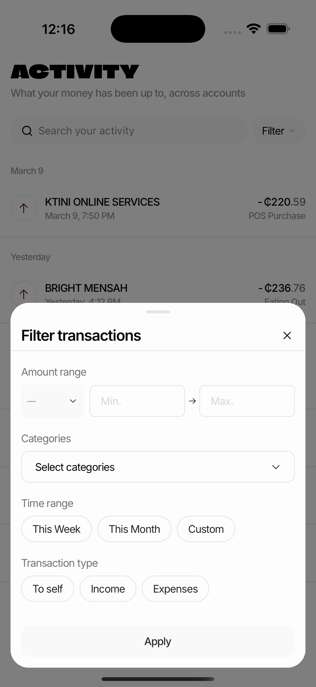

start_profiling / stop_profiling

| DRIVE | mobile_click_on_screen_at_coordinates(70, 201) | filter modal open |
| OBSERVE | start_profiling() | recording |
| WAIT | 14 seconds, no input | screen idle |
| OBSERVE | stop_profiling() | commits: 611 |
| JUDGE | commits === 0 // an idle screen commits zero times | FALSE |
| JUDGE | fix, then re-profile. commits === 0 | TRUE |

const FOOTER_HEIGHT = 64
Break the cycle.
Fiber tree, props, testIDs, console, network, profiling. All over CDP.
claude mcp add metro-mcp -- npx -y metro-mcpTaps, swipes, typing, screenshots. iOS and Android, simulator or real device.
github.com/mobile-next/mobile-mcpTick "record why each component rendered" first. Export the JSON, let the agent parse it.
npx react-devtoolsLibrary docs at the version you actually depend on. Kills the confidently-called, renamed-two-versions-ago function.
github.com/upstash/context7UI test runner. metro-mcp can record a real interaction and generate a Maestro flow with real selectors.
maestro.devPressing j in Metro, or opening the dev-menu debugger, steals it
and silently drops your MCP. metro-mcp's proxy multiplexes around it.
chrome-devtools-mcp cannot workPuppeteer-based, needs CDP domains Hermes does not implement. Architectural, not environmental.